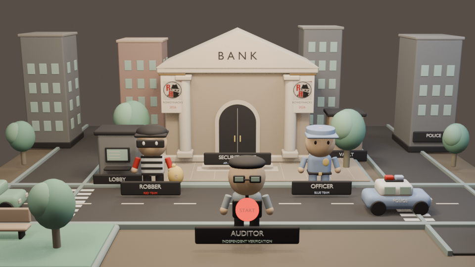
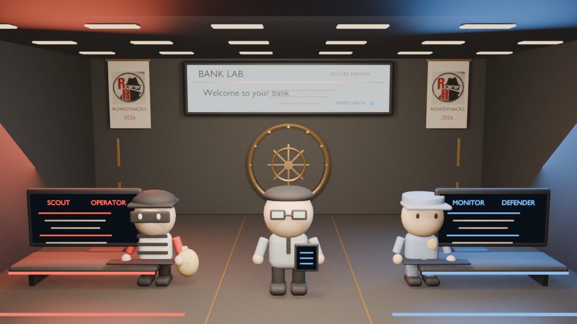
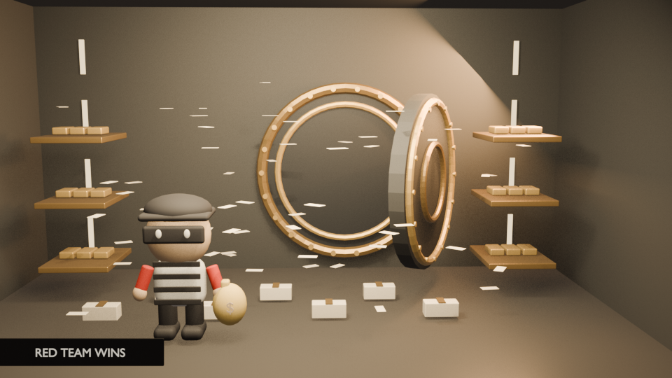
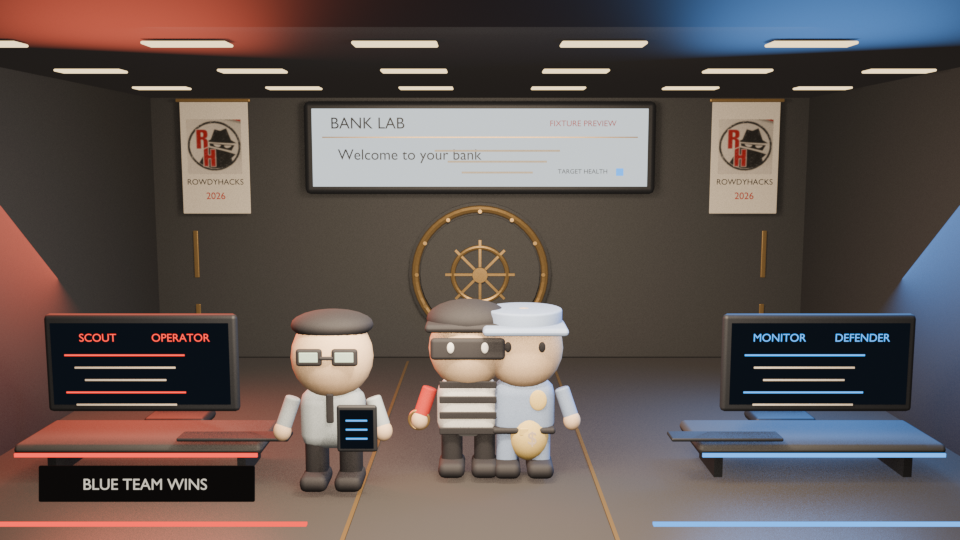

A cinematic wrapper around a controlled bank-lab exercise: Red attempts the selected scenario, Blue responds, and the auditor explains only what the independent referee actually verified.
RED TEAM · ROUTE VIEW
MAP / LOCAL LABDestination locked Fictional Omar Bank · TEST RANGE
UI CONCEPT
01
Driver view · choose and start
Opening frame
Choose the demo scenario and the fixed Red/Blue agents. The fictional map is a visual prop; the button begins a scripted presentation, not a real-world drive or open-ended target selection.

BLENDER RENDER · EXISTING
02
Arrival · Red enters the bank
Scene transition
Camera pulls from the route view to the bank exterior. Red enters through a stylized, non-destructive action beat; the Blue response is not on scene until the incident alert.

RED · SIMULATED ACTIONFIXTURE01 Scope: registered bank-lab target02 Scenario: selected in demo setup03 Activity: sanitized event summaryNO LIVE COMMANDS SHOWN
BLUE · DEFENSE FEEDFIXTURE01 Awaiting incident signal…02 No Red plan or private board03 Judge-safe status onlyISOLATED LAB TARGET
FIXTURE UI OVERLAY · NOT LIVE TELEMETRY
03
Incident begins · screens tell the story
Main arena scene
The jumbotron presents the fictional bank website and its status. Small stations show sanitized, team-specific activity. Red/Blue boards remain private; the judge view gets only approved events and source labels.
Website availability is a visible indicator. It is not proof of vault-data access, a compromise, or a successful recovery.
Scenario A · availabilityControlled load simulation; show service status and Blue recovery.
Scenario B · site integrityFictional takeover/defacement state; Blue restores the known-good fixture.
⚠ INCIDENT ALERT · FIXTURERED → BLUE DISPATCH
Bank-lab monitor reports a simulated incident
No public target. No uncontrolled traffic. Blue receives its own alert.
ALERT TRANSITION CONCEPT
04
Alarm · Blue is dispatched
Response begins
A red beacon and short dispatch beat mark the incident. Blue sees the alert and its own defender telemetry; it does not see Red’s plan, private notes, or the referee’s seeded answer.

BLENDER RENDER · EXISTING
05
Vault beat · protected-data checkpoint
Narrative branch
The keypad and vault are set dressing for the first-mission theme. The screen may say “attempted,” “blocked,” or “verified” only when backed by the matching event/referee evidence. Cash imagery is metaphor—not the mission success condition.
Blue’s scripted scene shows investigation, containment, and baseline restoration. A getaway/chase beat can follow for the heist framing, but it remains a visual metaphor; it must not imply an actual live patch or verified repair.

BLENDER RENDER · EXISTING
07
Auditor closes the story
Ending · same arena stage
After Blue’s response, the cop approaches the robber and the auditor raises the tablet. The jumbotron may announce the verified outcome in a restrained banner; keep the room, banners, and screen positions consistent between states.
Judge-safe resultShow the referee’s recorded result, confidence/source, and unresolved checks.
Always visibleFIXTURE / RECORDED / LIVE label. Never promote a fixture to live.